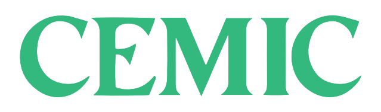

Garantice la seguridad de los datos de atención médica, proteja los activos confidenciales Abordar a los pacientes de forma remota para brindar servicios de atención médica requiere una verificación de identidad digital, una emisión segura de credenciales y la autenticación de transacciones de atención médica.
Desde el examen y el diagnóstico hasta el tratamiento y el seguimiento continuo, los usuarios de dispositivos sanitarios, los propios dispositivos, las aplicaciones que utilizan, los datos que recopilan, las instrucciones que reciben y sus conexiones están sujetos a amenazas cada vez mayores.
Cualquier infraestructura digital que sea segura debe garantizar la autenticidad e integridad del hardware y el firmware desde el nivel de fabricación y proteger los datos en el nivel del operador mediante certificados para la firma, el cifrado y la autenticación.
Involucrar a los pacientes de forma remota para brindar servicios de atención médica requiere verificación de identidad digital, emisión segura de credenciales y autenticación de transacciones de atención médica.
"Desde que contratamos el plan de coberturas fue un antes y un despues, me quedo tranquilo que la privacidad de los medicos y pacientes esta bien resguardada"
-Victor Torres. Director General de Cemic-
"La verdad que facilito muchisimo nuestro trabajo en el dia a dia por la facilidad de su sistema"
-Marcelo Carrasco.Medico de cabeceera de Hospital Italiano-